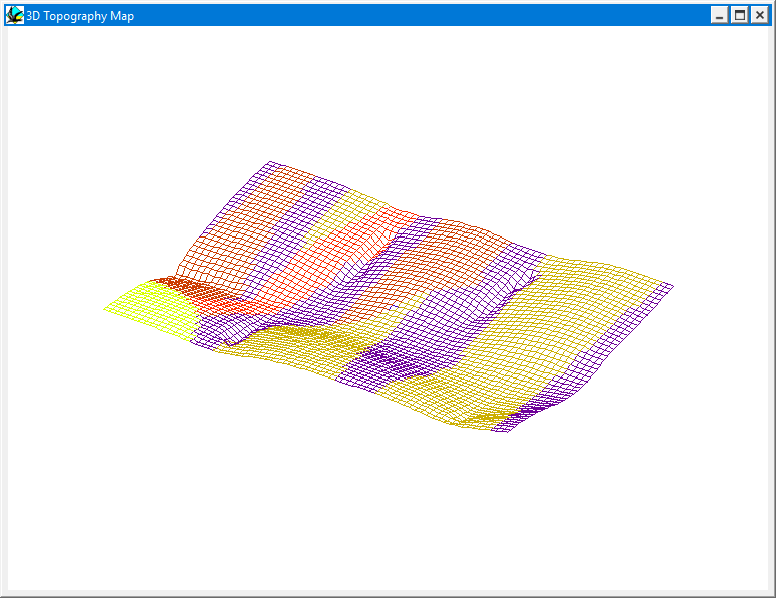

3D topography
A 3D view of the topography can be viewed by choosing 3D Topography from the Geology menu, which displays a wire-frame view of the geology draped over a three dimensional view of the topography.

3D Topography views are only available once a digital terrain model of the geology has been loaded (as a 51 row by 71 column tab-delimited ASCII file plus a header), by selecting the Topography button from the Geology Options Window. The shape of the digital terrain model is fixed, so changing the XY scale of the map also changes the XY scale of the digital terrain model.
The orientation of the view may also altered interactively by dragging the mouse around within the window containing the image. Dragging the mouse horizontally alters the Declination, dragging the mouse vertically alters the Azimuth.
Noddy · open source under the MIT licence · Loop3D/noddy_qt